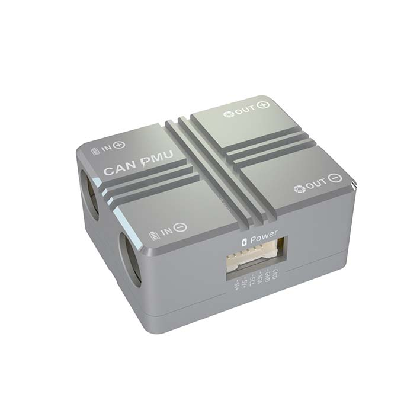
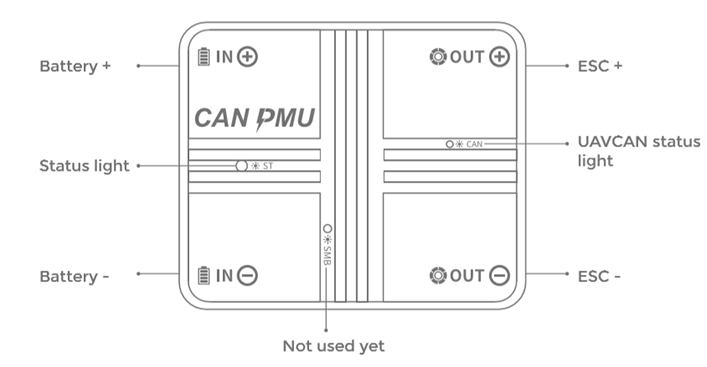
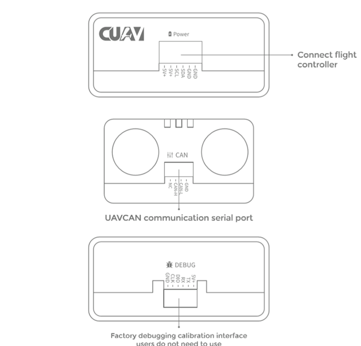
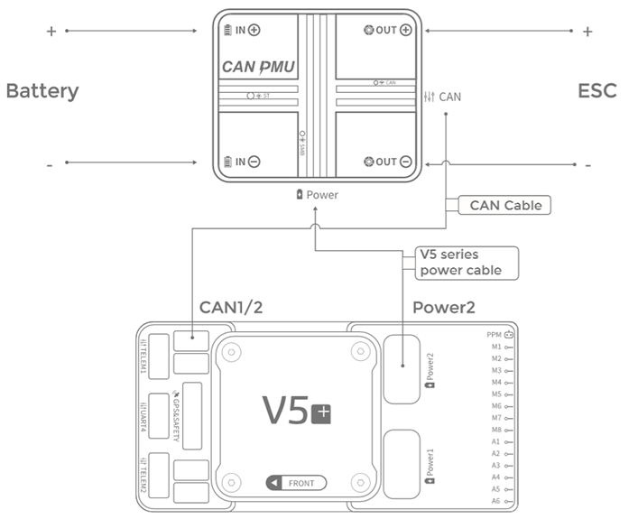

CUAV CAN/DroneCAN Power Module¶
{kind=link}
Overview¶
CUAV’s CAN/DroneCAN PMU is a drone power management module with built-in STM32F4 processor running CUAV’s ITT compensation algorithm to accurately measure the voltage and current of the drone’s battery. It supports 6~62V voltage input, and the POWER output port can output 5V/ 8A. It uses advanced CAN bus communication and supports the standard DroneCAN protocol. Each PMU is factory calibrated to ensure good consistency and high accuracy.
Specifications¶
Processor: STM32F412
Voltage Input: 6~62V (2S-15S)
Max Current: 110A
Voltage Accuracy: ±0.05V
Current Accuracy: ±0.1A
Resolution: 0.01A/V
Max Output Power: 6000W for 90s
Max Continuous Power: 5000W
Power Port Output: 5.4V/5A
Protocol: DroneCAN
Operating Temp: -20~+100℃
Supports firmware upgrade
No calibration required
Connector Types:
8mm female bullet power connectors (XT-90 battery and ESC cables provided)
Autopilot Power: Molex 6 pin 1.5mm #5025850670 (CUAV V5 cable provided)
CAN: 4 pin JST-GH (cable provided)
Physical Dimensions:
Size:46.5mm * 38.5mm * 22.5mm
Weight:76g
Buy¶
Pinouts¶
 {kind=link}
{kind=link}
Connecting to the System¶
{kind=link}
Connect the autopilot’s DroneCAN port the module’s CAN interface.
Using a CUAV V5 series power cable, connect the module’s Power interface to one of the V5 Autopilot’s power interfaces.
Enable CAN PMU¶
Set the following parameters in the Mission planner’s full parameter list and restart after writing:
CAN_P1_DRIVER to 1 if attached to CAN bus1 port or CAN_P2_DRIVER to 1 if attached to CAN bus2 port
BATT_MONITOR or
BATT_MONITORxto 8 enable a DroneCAN battery monitor on the appropriate battery monitor port.
{kind=link}